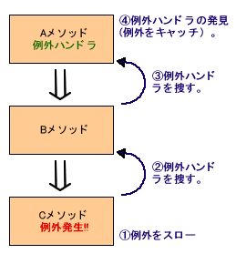

例外処理・スタックトレース
はじめに
「例外」という言葉は「原則にあてはまらないこと」という意味で使用される言葉ですが、
Javaにおいては エラー発生時 に処理されるため、本来の意味に加え ネガティブな意味 を持ちます。
プログラムが正常に動作しない場合においては、
「システムエラーが発生しました。」のようなメッセージが表示されることがあります。
その他、以下のような動作があげられますね。
- 使用中のアプリケーションがログイン画面に戻される
- 一時的に使用できない旨の画面が表示される
- 急にアプリケーションが落ちる
…etc
ネットショッピングのようなアプリケーションの使用中に上記のいずれかのようなエラーが急に表示された経験があるのではないでしょうか？
（Google先生に 「システムエラー ダイアログ」等の検索結果としてそれらしい画像がたくさん表示されますので一度検索してみるといいですね！
Javaに携わっていく上では完全不可避 といっても過言ではない機能になります。
少々ボリューミーですが、しっかり押さえましょう！
Step1: 例外処理の種類
Javaにおける例外処理は主に以下の3つです。
- 検査例外: Exception
- 実行時例外: RuntimeException
- エラー: Error
それぞれ明確な使用目的と使用タイミングがあります。
ひとつずつ見ていきましょう！
検査例外: Exception
前提として、
Javaなどのコンパイル言語ではプログラミングしたソースコードを実行前にコンパイルし、
コンピュータが理解できる形式に変換します。
コード上に文法の誤りがある場合は、コンパイル時点でエラーが出力され実行できないため、
基本的なミスや間違いは修正できますよね？
int number = "1"; こちらは明らかなコンパイルエラーを引き起こしますが、
そういったものと似た類の例外になります。
例として有名な検査例外は以下になります。
- ・
java.io.IOException - ファイルやネットワーク等の入出力中のエラー
- ・
java.sql.SQLException - データベースアクセス中に発生したエラー
上記2つを継承している場合は、以下のいずれかの対応が必要となります。
- 実装時点で処理に対して
catchする - メソッド内に記述した場合であれば、当該メソッドに
throws節を記述し、上位の処理へ例外を投げる
例外処理の実装が必須 となるので、覚えておきましょう！
実行時例外: RuntimeException
プログラムの中には、 コンパイル時にはエラーがなく、実行途中に起きるエラー もあります。
例えば、あるファイルを開こうとしたが、そのファイルが存在しなかったなどの場合です。
コンパイル時点ではファイルがあるかどうかはチェックされないので当然ですが、
実際にプログラムを実行してみたらあるはずのファイルが無い、、、
そういったケースは少なくありません。
プログラムは、そのファイルを開こうとしたが無かったため処理が止まってしまいます。
ただし、例外処理を記述することによって以下のことが可能になります。
- 「処理を止めるプログラム」をそのまま動かす
- ファイルが未存在である旨を示すメッセージを表示する
エラー: Error
ざっくりとした表現をしていますが、
システムの動作を継続できないようなプログラム中で最も致命的なエラー となります。
このエラーに関しては、プログラマーが特別に対処をするということはなく、発生時にはJavaがプログラムを強制終了します。
例として有名な検査例外は以下になります。
- ・
java.lang.OutOfMemoryError - 主にJavaで使うメモリ容量が不足している場合に発生
このエラーが発生した場合は、 Javaのあらゆる機能は使用できず、System.out.println() などを含む、コンソールへのログ出力すらできていない可能性があります。
そのような場合におけるエラーは捕捉する必要がないため、早急にプログラムが終了します。
「メモリ容量＝浴槽」とした場合、
お風呂のお湯はりが止まらず溢れ出している状態 です。
（浴槽から溢れ出し、水道代が無駄にかさみます。
「メモリ容量＝プリンターのインク容量」とした場合、
インク切れのプリンターをずっと使用し続けるような状態 です。
（白紙の用紙が、ある分だけ出続けます。
いずれも致命的なので、このような場合は早急にプログラムは終了させるべきですね。
Step2: 処理の流れ
第一に、例外処理は 検知 しなければ始まりません。
例外処理がサポートされているプログラミング言語では、
起きた例外を自動で検知してその例外を処理できる箇所に投げます。
投げられた例外を捉えることを catchする といい、catch した例外に対して独自の処理を追加できます。
例外処理の書き方
【サンプル】
テンプレートな内容を以下になります。
解説
例外処理は、以下の3つのブロックで構成されます。
- ・
try - 例外の発生する可能性のある処理を記述します。
Javaの標準APIにおいては、予め例外処理の発生する可能性のあるメソッドに対しては、throws ◯◯Exceptionと定義されています。 - ・
catch - 発生した例外をキャッチします。
複数記述することが可能（同じ例外クラスを重複して記述することは不可） です。
発生する例外によって対策処理を分ける場合などに有効です。
catch では、発生した例外がどんな内容の例外であるかをコンソールログへ出力することが多いです。
通常の処理の道程に加え、例外もログ出力することで保守体制を整えます。
その他には、例外の情報を一時的に保持しておいて、finally へ処理が移行した際に、その保持していた内容を使用して何かの処理を実行する。
といった感じです。
- ・
finally - 例外発生の有無に関わらず実行されます。
finallyに関しては、 必須ではありません。
しかし、例外の発生有無に関わらず確実に処理を実行するので、
〆となる終了処理を追加したい場合 は必要に応じて実装すればよい、といった感じです。
try catch により、OSで確保される資源を消費する処理（ストリームやデータベース接続処理など）が捕捉されている場合は、
確実にその使用リソースを開放する必要があるため、そのような場合に使用されます。
また、例外の内容を捕捉した上で、最終的な処理の実行結果のメッセージを表示する、
といったケースで使用することも可能です。
例）「システムエラーが発生しました。しばらく時間を置いて再度実行してください。」
このケースに関しては、常時使用するユーザー向けのものではないことが多いですが、
何のアナウンスもなく、エラーが発生したことを認識もできずにアプリケーションが使用できなくなること
は、回避すべきですので、多くのアプリケーションで組み込まれている 「仕様」 になります。
Step3: throw・throws
「投げる」という意味合いを持つ言葉です。
「throw」と「throws」は似た言葉ですが、Javaにおいては明確な違いがあります！
（ここからはより詳細にコードサンプルも充実させて説明していきます。
throw
- ・
throw - 意図的に例外を発生させる機能 で、メソッド内の処理で
throwを記述
その場合、メソッド内には「例外」が発生するため
「例外処理（tryブロック、catchブロック、finallyブロック）」または、throwsを記述し対応する必要があります。
【サンプル: hogeオフィスは、帝国ホテルか、六本木ヒルズか問題】
【実行結果】
解説
- ・余計な条件分岐（
else）を記述しない - 最初のif文で例外を発生させると後続の処理は実行されず、
catch内に処理が移るため、不要なロジックを記述せずに済みます。
仮に記述する場合は、以下のような処理になりますね。
今回の場合は、 else 文を記述する必要は無いため、サンプルにあるような書き方が好ましいでしょう。
注意点
今回使用しいている例外はすべてを捕捉する例外クラス（ Exception ）ですが、
以下のような場合はサンプルの書き方はふさわしくありません。
【サンプル: hogeOffice に NULL 格納される可能性がある場合】
上記の場合、 throw は実行されず、
後続の } catch (Exception e) { で捕捉されます。
詳細な例外の種類としては、 NullPointerException となります。
俗に「 ヌルポ 」と呼ばるこの例外は例外の中でも頻出の部類になります！
（可愛らしいちょっとふざけた名前ですが、可愛さ 0 です笑
しかし、その際の例外処理の内容は System.out.println("オフィスが間違ってます。"); となっています。
間違ってはいませんが、 正確な処理ではありません。
このような、 想定外の例外が発生する場合 を考慮して、
以下のように、より適切な例外クラスを記述することが求められます。
と言いつつも、上記が完璧な処理かと言われれば、否です！
より適切な処理は以下になります。
【パターン1: hogeOffice が NULLの場合を考慮】
【パターン2: hogeOfficeを用いた処理で例外が発生しないようにする】
CONST_IMPERIAL_HOTEL は 定数 として定義されているので、
意図的に NULL が格納されない限りは、ほぼ確実に NULL でないことが保証されたものです。
その定数から equals() メソッドを呼び出すことで、 NullPointerExcepition の可能性を排除しています。
パターン1、2 どちらでも構いませんが、
そもそもの話で、 hogeOffice が NULL になるケースがあることは、
「 仕様 として本当に正しいのか？」を考えなくてはなりません。
元々のサンプル内のコードを見る限りでは hogeOffice が NULL であることはありませんが、
追加修正などが入った場合や、様々な値を用いて試験をするなどした場合、
誤って hogeOffice の値を書き換えたままにする可能性は否めません。
こういった、 開発者側の都合で起きるエラー は未然に防ぐか、
発生する可能性を潰すような仕様とコーディング を心がける必要があります！
throws
- ・
throws - 「例外を投げる可能性がある」 メソッドに対して記述
メソッド内の処理中に、前述のthrowを含む処理を実装していることが前提となります。
通常、throw されている場合は、 try-catch により、例外を捕捉し対応しますが、
例外の発生有無に関わらず、「例外処理」を行わないようにする場合は、メソッドに throws 宣言 を記述します。
既にお気づきかと思いますが、 例外処理を実装するとコード量が増えます。
例外処理は突き詰めるとかなりの量を記述する必要があります。
そのため、必要以上に捕捉するような不要な例外処理は極力避けた可読性の高いコードとなる方が好まれます。
また、それとは別に自身（例外がthrowされるメソッド）より上位の処理（呼び出し元）で例外を捕捉することで処理が簡潔になり、
同じような例外処理が発生するメソッドが複数存在した場合 でも、
例外処理が必要な箇所を絞り込んだ対応ができるので、そういったケースで throws が使用される傾向が高いです。

これにより、例外オブジェクトの内容を調べることで、
メソッドの呼び出し階層を順々にたどっていくことができ、
処理がどのように実行され、どこで異常な状態（バグ）になったかを調査することができます。
【サンプル: 最上位までの throws チェーン（鎖）】
・ファイル存在チェック
解説
- ・最深部の
outputFileContents→inputFileの順にthrowされた例外をさかのぼって検出 outputFileContentsではread()、inputFileではnew FileReader("sample.txt");で例外が発生する可能性があります。
それらを各メソッド内で処理することなく、最上位のmainメソッド内で最終的にtry-catchして例外処理を一つにまとめています。- ・
IOExceptionとFileNotFoundExceptionを分離 - 本来は
new FileReaderも、read()もIOExceptionとしてまとめられるのですが、
同じ例外として捕捉してしまうと、どちらで例外を捕捉したかが判別し辛いため、あえて詳細に分けています。
注目ポイントとしては、inputFileに対し、 2つのthrows宣言 を記述していることですね。
これにより、最深部のIOExceptionと 自身のFileNotFoundExceptionの両方をthrowsすることが可能です！
サンプルにはコーディングしていませんが、
最上位までthrows宣言せずに、途中で try-catch することも可能です。
「どこで捕捉し、どこで対応するか」 を見極められるようになれると、
Javaエンジニアとしての実力はかなりアップしたと言えるでしょう！
補足
- ・ ASCII コード
- サンプル中のコメントに出てきましたが、これは該当する文字を表す整数値になります。
例えば、「1」という文字は「49」という10進数の整数値で返されるため、人間が理解できるようにchar型へキャストしています。
■ ASCIIコード表
→詳細はコチラ
Step4: よく見るJavaのException
最後に、Javaにおいてよく見受けられる代表的な例外クラスについて、軽くみていきましょう！
| 例外クラス | 説明 |
|---|---|
| NullPointerException | 「ヌルポ」と呼ばれるException界のアイドル。 値がNULLの変数からメソッドやプロパティを呼び出したりすると発生。 |
| ArrayIndexOutOfBoundsException | 配列 のお友達。int[] arrayNumbers = {1, 2, 3};arrayNumbers[10] といった感じで、要素外にアクセスすると発生。 |
| IndexOutOfBoundsException | ArrayIndexOutOfBoundsExceptionと似ているけど別もの。List などのコレクション使用時に配列と同様、要素外にアクセスすると発生。 |
| ClassCastException | 文字通り、キャスト時に発生する例外。Object へ格納した値が int で、キャスト後の値が String や booleanのように、型が異なる場合に発生。 |
| IOException | ファイル操作や通信系の処理が失敗した場合に発生。 |
| IllegalArgumentException | 指定されている引数と違う引数を与えた場合に発生。String が必要とされているのに、 int が渡ってしまった場合などに発生。 |
| OutOfMemoryError | トップクラスに嫌われる例外。 無駄なメモリ消費をしないコーディングを心がける、実行環境を整備するなど、具体的な対応は様々。 不要な処理やオブジェクトが原因でメモリを消費しているケースが多い |
他にも多々存在するため、自身が開発中に呼び出すメソッドにおいては、
少なくとも一度は例外処理が発生するか否かのチェックをすることを推奨します。
（所見のメソッドはチェック必須です！
課題
プロジェクト名・・・ 4-1
パッケージ名1 ・・・ exception
Java クラス名 ・・・ ExException.java (下記コードをコピー)
以下の添付画像のようにコンソールへ出力されるよう課題を実施し提出してください。
以下の画像の 2: ArrayIndexOutOfBoundsException ですが、表示されている数値（5や3）については異なっていてもかまいません。
課題を提出するときには、「4-1」ディレクトリ配下にあるすべてのファイルをコミット、プッシュしてください。